CRVI000038John Cage - Early Electronic And Tape Music
Designed by Mountain · Sub Rosa · 2014
Designed by Mountain · Sub Rosa · 2014
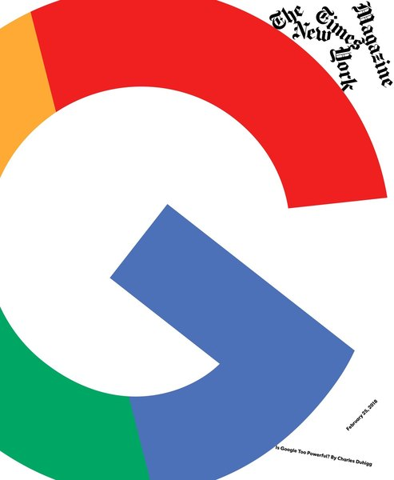
CRVI000619Gail Bichler - Is Google Too Powerful?
The New York Times Magazine, February 25 2018 · 2018
The New York Times Magazine, February 25 2018 · 2018
CRVI000615D.W. Pine, Tim O'Brien - Stormy
TIME, April 23 2018 · 2018
TIME, April 23 2018 · 2018

CRVI000035Lee Bannon - Fantastic Plastic
Artwork by Lazerus Pit · 2012
Artwork by Lazerus Pit · 2012

CRVI000633D.W. Pine, Edel Rodriguez - Total Meltdown
TIME, October 24 2016 · 2016
TIME, October 24 2016 · 2016
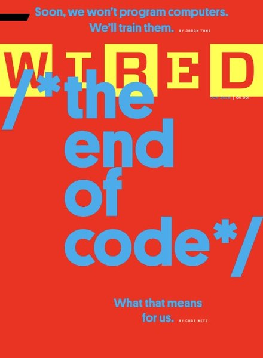
CRVI000644Billy Sorrentino - The End of Code
WIRED, June 2016 · 2016
WIRED, June 2016 · 2016

CRVI000052Com Truise - Galactic Melt
Artwork by Seth Haley · 2011
Artwork by Seth Haley · 2011

CRVI000051Tycho - Epoch
Designed by Scott Hansen · 2017
Designed by Scott Hansen · 2017

CRVI000464Richard Turley - The Hedge Fund Myth
Bloomberg Businessweek, 15 July 2013 · 2013
Bloomberg Businessweek, 15 July 2013 · 2013

CRVI000191Unknown - Confused
Reaction GIF · Winona Ryder at the 2017 SAG Awards · 67 frames, 4.5s loop · 2017
Reaction GIF · Winona Ryder at the 2017 SAG Awards · 67 frames, 4.5s loop · 2017

CRVI000219Yayoi Kusama - Longing for Eternity
Photograph by Vincent Tullo · shown in 'Festival of Life', David Zwirner Gallery · 2017
Photograph by Vincent Tullo · shown in 'Festival of Life', David Zwirner Gallery · 2017

CRVI000853Richard Turley - [MTV ident — Zen Jen]
MTV ident · animated
MTV ident · animated
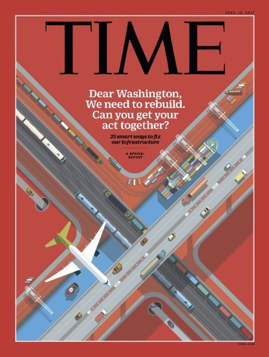
CRVI000630D.W. Pine, Peter Greenwood - Dear Washington, We Need to Rebuild. Can You Get Your Act Together?
TIME, April 10, 2017 · 2017
TIME, April 10, 2017 · 2017

CRVI000632Michael Goesele, Justin Metz - Pop Go the Weasels
Newsweek, November 17, 2017 · 2017
Newsweek, November 17, 2017 · 2017

CRVI000652Unknown - Coke Finally Admits It Has a Fat Problem--And a Plan to Fix It
Bloomberg Businessweek, August 4-10, 2014 · 2014
Bloomberg Businessweek, August 4-10, 2014 · 2014

CRVI000676Tom Alberty, Bobby Doherty - The Golden Age of Pods
New York, March 18-31, 2019 · 2019
New York, March 18-31, 2019 · 2019

CRVI000711Tame Impala - Disciples
Designed by Robert Beatty · 2015
Designed by Robert Beatty · 2015

CRVI000189Unknown - Nope
Reaction GIF cut from TMZ footage · Rihanna leaving a club · 49 frames, 3.9s loop · 2014
Reaction GIF cut from TMZ footage · Rihanna leaving a club · 49 frames, 3.9s loop · 2014

CRVI000624David Plunkert - Blowhard
The New Yorker, August 28, 2017 · 2017
The New Yorker, August 28, 2017 · 2017

CRVI000650Unknown - Health
New York, June 9-15, 2014 · 2014
New York, June 9-15, 2014 · 2014

CRVI000204Unknown - Roll Safe
Reaction GIF · Kayode Ewumi as Reece Simpson · 21 frames, 1.1s loop · 2016
Reaction GIF · Kayode Ewumi as Reece Simpson · 21 frames, 1.1s loop · 2016

CRVI000674Magnus Berger, Jennifer Pastore, Campbell Addy - The Innovators Issue
WSJ. Magazine, November 2019 · 2019
WSJ. Magazine, November 2019 · 2019

CRVI000672Magnus Berger, Jennifer Pastore, Ethan James Green - The Innovators Issue
WSJ. Magazine, November 2019 · 2019
WSJ. Magazine, November 2019 · 2019

CRVI000677Tom Alberty, Eva O'Leary - What Instagram Did to Me
New York, September 16-29, 2019 · 2019
New York, September 16-29, 2019 · 2019

CRVI000660Unknown - How to Make It in the Art World
New York, April 30, 2012 · 2012
New York, April 30, 2012 · 2012

CRVI000071David Kanaga - Dyad OGST
Designer unknown · Software · 2013
Designer unknown · Software · 2013

CRVI001062Lezley Saar - Thérèse Raquin
From the series Madwoman in the Attic · 2011
From the series Madwoman in the Attic · 2011

CRVI000617Nejc Prah, Simon Dawson/Bloomberg - Big Changes at the Top
Bloomberg Businessweek, March 19 2018 · 2018
Bloomberg Businessweek, March 19 2018 · 2018

CRVI000634Unknown - Single Women
New York, February 22-March 6 2016 · 2016
New York, February 22-March 6 2016 · 2016

CRVI000076Herva - Kila
Designer unknown · 2015
Designer unknown · 2015

CRVI000675Unknown - The Apology Machine
Bloomberg Businessweek, March 18, 2019 · 2019
Bloomberg Businessweek, March 18, 2019 · 2019

CRVI000074F.C. Judd - Electronics Without Tears
Designer unknown · Public Information · 2012
Designer unknown · Public Information · 2012

CRVI000659Unknown - Bang Head Here
Bloomberg Businessweek, May 28–June 3, 2012 · 2012
Bloomberg Businessweek, May 28–June 3, 2012 · 2012

CRVI001026Adrian Ghenie - The Arrival
Oil on canvas, 210 × 165 cm · 2014
Oil on canvas, 210 × 165 cm · 2014

CRVI000651Unknown - The Home Issue
Kinfolk, Spring 2014 Brainiest · 2014
Kinfolk, Spring 2014 Brainiest · 2014

CRVI000628Barry Blitt - Eustace Vladimirovich Tilley
The New Yorker, March 6, 2017 · 2017
The New Yorker, March 6, 2017 · 2017

CRVI000656Unknown - How Blackberry Became a Relic
Bloomberg Businessweek, December 9–1 Photographs from various museums and art libraries 2013 · 2013
Bloomberg Businessweek, December 9–1 Photographs from various museums and art libraries 2013 · 2013

CRVI000062Reliq - Minority Report
Artwork by Tomokazu Matsuyama · Noble · 2011
Artwork by Tomokazu Matsuyama · Noble · 2011

CRVI000027Cevdet Erek - Davul
Designed by John Coulthart · 2017
Designed by John Coulthart · 2017

CRVI000625Jody Quon, Christopher Anderson - David Letterman Returns
New York, March 6-19, 2017 · 2017
New York, March 6-19, 2017 · 2017

CRVI000083Kuedo - Severant
Designer unknown · Planet Mu · 2011
Designer unknown · Planet Mu · 2011

CRVI000301Matt Baldwin - Night In The Triangle
Designer unknown · American Dust · 2011
Designer unknown · American Dust · 2011

CRVI000680Magnus Berger, Esmé René, Robert Polidori - The Sistine Chapel
WSJ. Magazine, April 2019 · 2019
WSJ. Magazine, April 2019 · 2019

CRVI000638Tomer Hanuka - Take the L Train
The New Yorker, April 11 2016 · 2016
The New Yorker, April 11 2016 · 2016

CRVI000270Mop Mop - Isle Of Magic
Designer unknown · Agogo · 2013
Designer unknown · Agogo · 2013

CRVI000623Lia Kantrowitz, Kitron Neuschatz, Elizabeth Renstrom - Burnout and Escapism
VICE, December 2018 · 2018
VICE, December 2018 · 2018

CRVI000643Chin Wang, Javier Jaen - The Genius of Bill Belichick
ESPN The Magazine, October 17 2016 · 2016
ESPN The Magazine, October 17 2016 · 2016

CRVI000653Cover by Michael Marcelle - The Wall Street Issue
Vice, December 2014 · 2014
Vice, December 2014 · 2014

CRVI000849form - form 266
Juli/Aug 2016 · Man/Machine · 2016
Juli/Aug 2016 · Man/Machine · 2016

CRVI000618Leo Jung, Trent Davis Bailey - A Kingdom From Dust
The California Sunday Magazine, February 4 2018 · 2018
The California Sunday Magazine, February 4 2018 · 2018

CRVI000392M. Geddes Gengras - Test Leads
Designer unknown · Holy Mountain · 2012
Designer unknown · Holy Mountain · 2012

CRVI001027Adrian Ghenie - Charles Darwin as a young man
Oil on canvas, 49 × 32.5 × 4.5 cm · 2014
Oil on canvas, 49 × 32.5 × 4.5 cm · 2014

CRVI000272Meridian Brothers - Desesperanza
Designer unknown · Soundway · 2012
Designer unknown · Soundway · 2012

CRVI000673Rob Vargas, Alicia Tatone, Micaiah Carter - The New Masculinity Issue
GQ, November 2019 · 2019
GQ, November 2019 · 2019

CRVI000614Barry Blitt - Welcome to Congress
The New Yorker, November 19 2018 · 2018
The New Yorker, November 19 2018 · 2018

CRVI000048Oneohtrix Point Never - R Plus Seven
Designed by Robert Beatty · Warp Records · 2013
Designed by Robert Beatty · Warp Records · 2013

CRVI000657David Parkins - The Surprising Sophistication of Twitter
Bloomberg Businessweek, November 11–17 2013 · 2013
Bloomberg Businessweek, November 11–17 2013 · 2013

CRVI000854Richard Turley - [MTV ident — waterfall face]
MTV ident · animated
MTV ident · animated

CRVI000073Event Cloak - Life Strategies
Designer unknown · 2017
Designer unknown · 2017

CRVI000316Moritz Von Oswald Trio - Horizontal Structures
Designer unknown · Honest Jon's · 2011
Designer unknown · Honest Jon's · 2011

CRVI000649Unknown - Speaking Emoji
New York, November 17-23, 2014 · 2014
New York, November 17-23, 2014 · 2014

CRVI000851Richard Turley - I Am My MTV
MTV ident
MTV ident

CRVI000635Barry Blitt - Anything But That
The New Yorker, November 14 2016 · 2016
The New Yorker, November 14 2016 · 2016

CRVI000473Unknown - Pikettymania
Bloomberg Businessweek, June 2 – June 8, 2014 · 2014
Bloomberg Businessweek, June 2 – June 8, 2014 · 2014
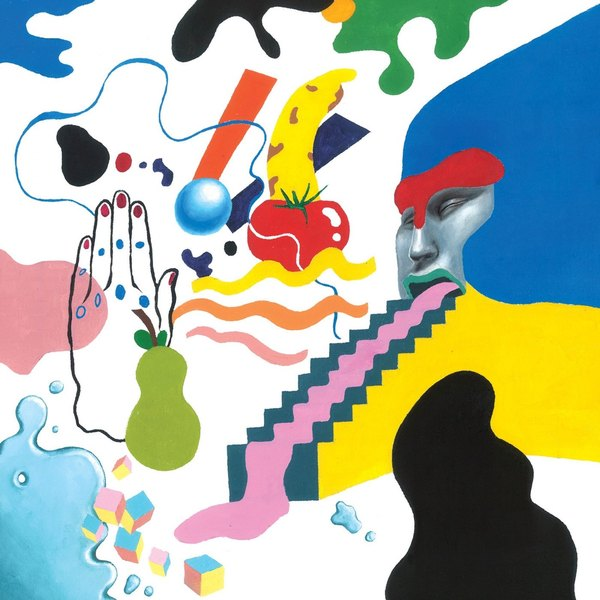
CRVI000012Foodman - Ez Minzoku
Artwork by Ellen Thomas, Keith Rankin · 2017
Artwork by Ellen Thomas, Keith Rankin · 2017
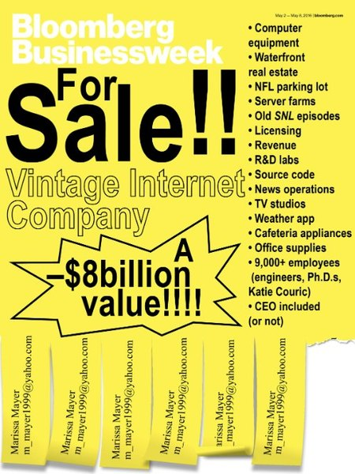
CRVI000637Unknown - Yahoo's $8 Billion Black Hole
Bloomberg Businessweek, May 2-8 2016 · 2016
Bloomberg Businessweek, May 2-8 2016 · 2016
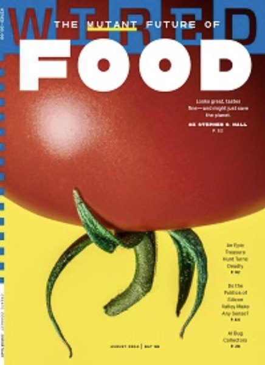
CRVI000621Maurizio Di Iorio - The Mutant Future of Food
WIRED, August 2018 · 2018
WIRED, August 2018 · 2018

CRVI000058Flying Lotus - Pattern +Grid World
Designed by Theo Ellsworth · Warp Records · 2010
Designed by Theo Ellsworth · Warp Records · 2010

CRVI000852Richard Turley - No Chill
MTV
MTV

CRVI000641R. Kikuo Johnson - Commencement
The New Yorker, May 30 2016 · 2016
The New Yorker, May 30 2016 · 2016
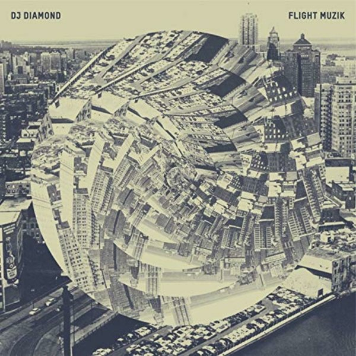
CRVI000324DJ Diamond - Flight Muzik
Designer unknown · Planet Mu · 2011
Designer unknown · Planet Mu · 2011
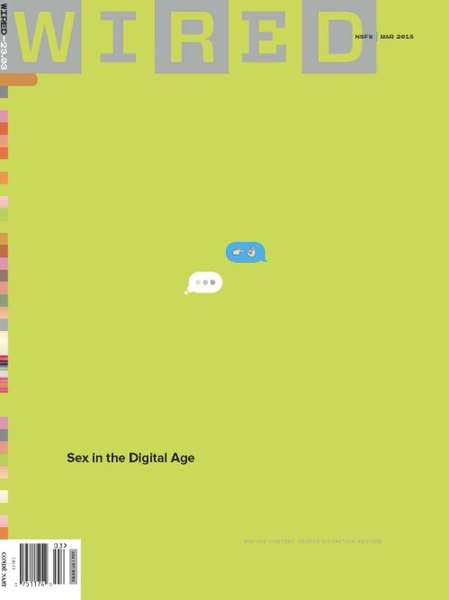
CRVI000648Billy Sorrentino - Sex in the Digital Age
WIRED, March 2015 · 2015
WIRED, March 2015 · 2015

CRVI000642Luke Hayman, Shigeto Akiyama, Annabel Mehran - Yentl 4Eva
Tablet Magazine, Fall 2016 · 2016
Tablet Magazine, Fall 2016 · 2016

CRVI000679Jackie Nickerson - For the Love of Lupita Nyong'o
Vanity Fair, October 2019 · 2019
Vanity Fair, October 2019 · 2019

CRVI000209Unknown - First Pitch
Reaction GIF · Sister Mary Jo Sobieck · 170 frames, 5.1s loop · 2018
Reaction GIF · Sister Mary Jo Sobieck · 170 frames, 5.1s loop · 2018

CRVI000654Unknown - Coral
Vice, August 2014 Lifestyle · 2014
Vice, August 2014 Lifestyle · 2014

CRVI000474Unknown - The How-To Issue
Bloomberg Businessweek, April 15 – April 21, 2013 · 2013
Bloomberg Businessweek, April 15 – April 21, 2013 · 2013

CRVI000042Tropic Of Cancer - Restless Idylls
Designed by Oliver Smith · 2013
Designed by Oliver Smith · 2013

CRVI000261Wiktor Gorka - The Great Escape
Film Poster Designed By Wiktor Gorka · 2018 · 2018
Film Poster Designed By Wiktor Gorka · 2018 · 2018

CRVI000034Teams - Dxys Xff
Artwork by Jónó Mí Ló · AMDISCS · 2011
Artwork by Jónó Mí Ló · AMDISCS · 2011
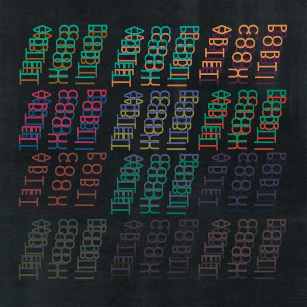
CRVI000290Portico Quartet - Portico Quartet
Designer unknown · Real World · 2012
Designer unknown · Real World · 2012

CRVI000047Various - Hohokum Soundtrack
Designed by Richard Hogg · Ghostly International · 2014
Designed by Richard Hogg · Ghostly International · 2014

CRVI000302Pekka Airaksinen - Other Power
Designer unknown · Hormonia · 2012
Designer unknown · Hormonia · 2012
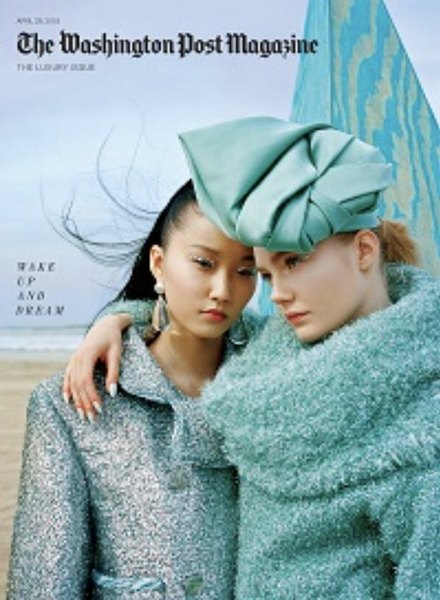
CRVI000620Beth Broadwater, Juco - Wake Up and Dream
The Washington Post Magazine, April 29 2018 · 2018
The Washington Post Magazine, April 29 2018 · 2018
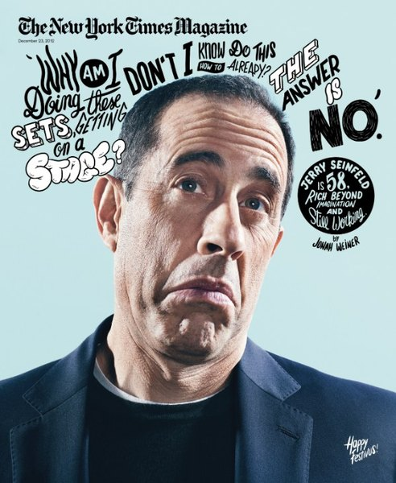
CRVI000658Unknown - Jerry Seinfeld Is 58, Rich Beyond Imagination and Still Working
The New York Times Magazine, December 23, 2012 · 2012
The New York Times Magazine, December 23, 2012 · 2012
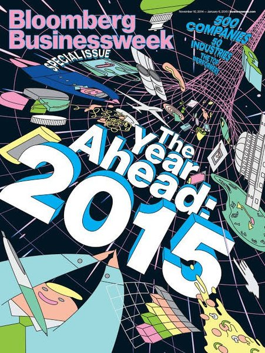
CRVI000468Unknown - The Year Ahead: 2015
Bloomberg Businessweek, November 10, 2014 – January 6, 2015 · 2014
Bloomberg Businessweek, November 10, 2014 – January 6, 2015 · 2014

CRVI000218Yayoi Kusama - Kusama painting, Tokyo
Photograph by Motohiko Hasui · at the media preview of the Yayoi Kusama Museum · 2017
Photograph by Motohiko Hasui · at the media preview of the Yayoi Kusama Museum · 2017

CRVI000030Equiknoxx - Bird Sound Power
Designed by Jon Kraus · DDS · 2016
Designed by Jon Kraus · DDS · 2016

CRVI000015FKA Twigs - LP 1
Designed by FKA Twigs, Phil Lee · Young Turks · 2014
Designed by FKA Twigs, Phil Lee · Young Turks · 2014

CRVI000805Mark Tansey - Reverb
Oil on canvas · 213.4 × 152.4 cm · 2017
Oil on canvas · 213.4 × 152.4 cm · 2017
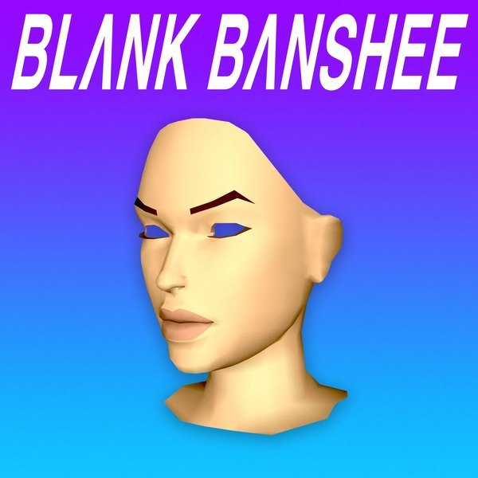
CRVI000065Blank Banshee - Blank Banshee 0
Designer unknown · Hologram Bay · 2012
Designer unknown · Hologram Bay · 2012
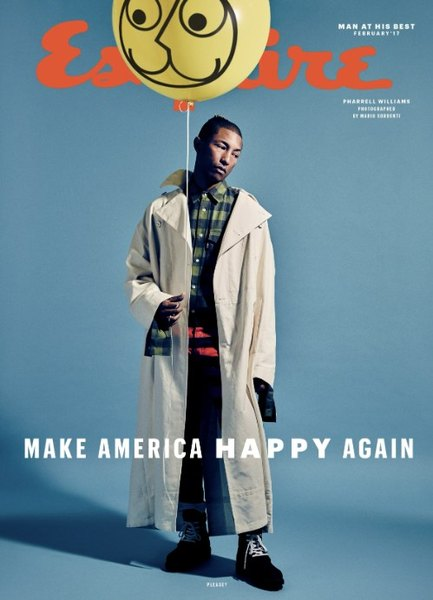
CRVI000626Anton Ioukhnovets, Mario Sorrenti - Make America Happy Again
Esquire, February 2017 · 2017
Esquire, February 2017 · 2017

CRVI000646Scott Seymour, Kevin Val Aelst, Rose Engelland - The Isolated Black Professor
The Chronicle Review, January 30 2015 · 2015
The Chronicle Review, January 30 2015 · 2015
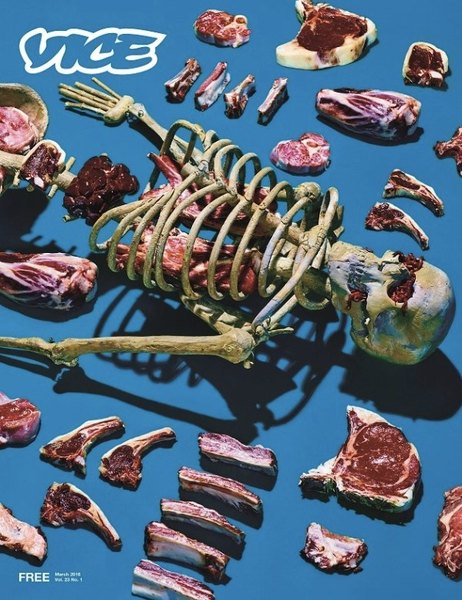
CRVI000639Maurizio Cattelan, Pierpaolo Ferrari - VICE, March
VICE, March 2016 · 2016
VICE, March 2016 · 2016
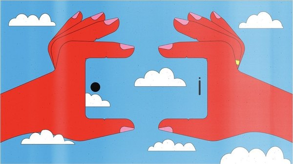
CRVI000667Simon Abranowicz - How I Broke My Smartphone Addiction
GQ, November 27, 2019 · 2019
GQ, November 27, 2019 · 2019
CRVI000405Elektro Guzzi - Elektro Guzzi
Designer unknown · Macro · 2010
Designer unknown · Macro · 2010
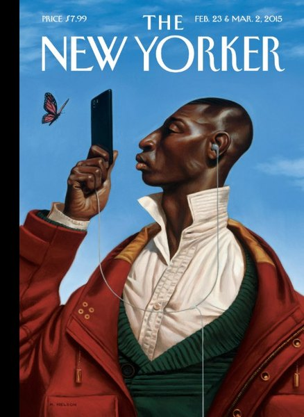
CRVI000647Françoise Mouly, Kadir Nelson - 90th Anniversary [Eustace Tilley]
The New Yorker, February 23 2015 · 2015
The New Yorker, February 23 2015 · 2015

CRVI000666Lesley Q. Palmer, Katrina Zook, Dan Saelinger - Inside the Social Security Phone Scam
AARP The Magazine, April/May 2019 · 2019
AARP The Magazine, April/May 2019 · 2019

CRVI000712Tame Impala - Eventually
Designed by Robert Beatty · 2015
Designed by Robert Beatty · 2015
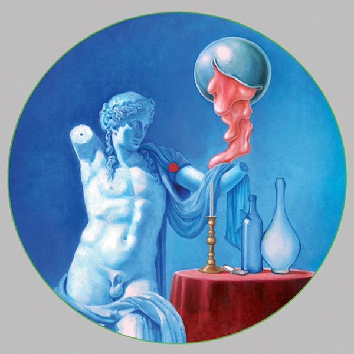
CRVI000013Giant Claw - Dark Web
Artwork by Ellen Thomas, Keith Rankin · 2014
Artwork by Ellen Thomas, Keith Rankin · 2014
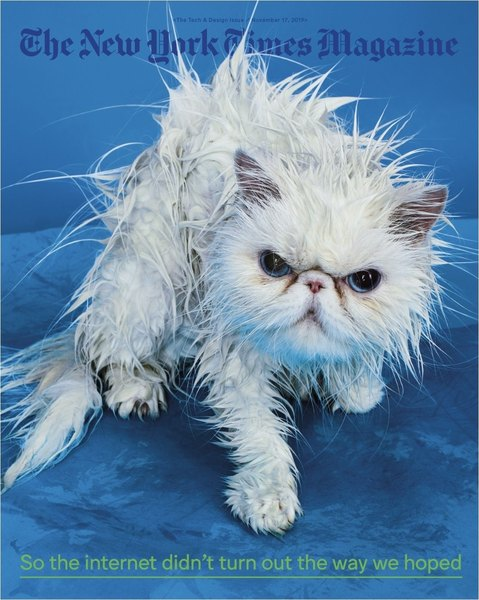
CRVI000678Gail Bichler, Kathy Ryan, Maurizio Cattelan, Pierpaolo Ferrari - The Tech & Design Issue
The New York Times Magazine, November 17, 2019 · 2019
The New York Times Magazine, November 17, 2019 · 2019
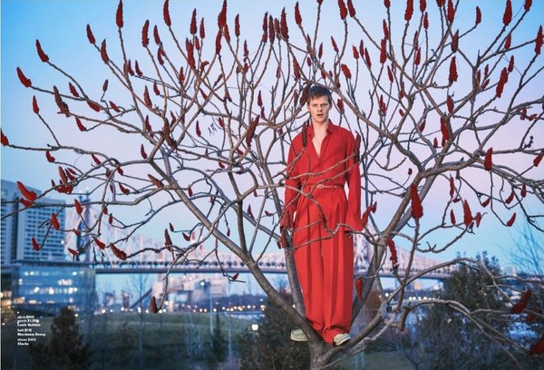
CRVI000665Ryan McGinley - The Long Adolescence of Lucas Hedges
GQ, March 2019 · 2019
GQ, March 2019 · 2019

CRVI000461Richard Turley - Let's Get It On
Bloomberg Businessweek, 6–12 February 2012 · 2012
Bloomberg Businessweek, 6–12 February 2012 · 2012

CRVI000636Vasilis Papadrosos, Peter Jablokow - United's Quest to Be Less Awful
Bloomberg Businessweek, January 18-24 READER'S CHOICE Chicagoly "Addicted to the Internet," Fall 2016 · 2016
Bloomberg Businessweek, January 18-24 READER'S CHOICE Chicagoly "Addicted to the Internet," Fall 2016 · 2016
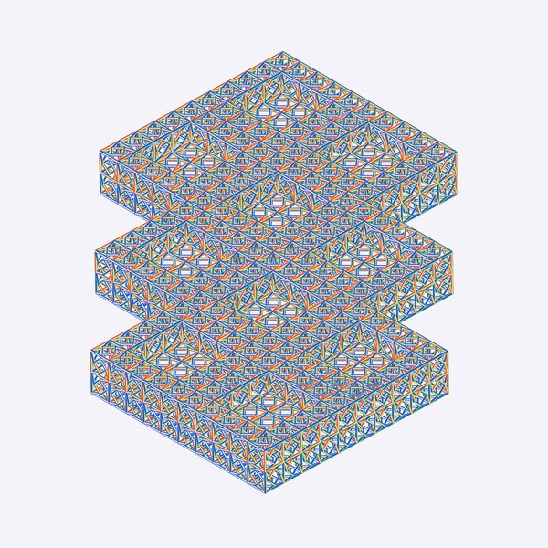
CRVI000103Visible Cloaks - Reassemblage
Designed by Will Work For Good · Rvng Intl. · 2017
Designed by Will Work For Good · Rvng Intl. · 2017
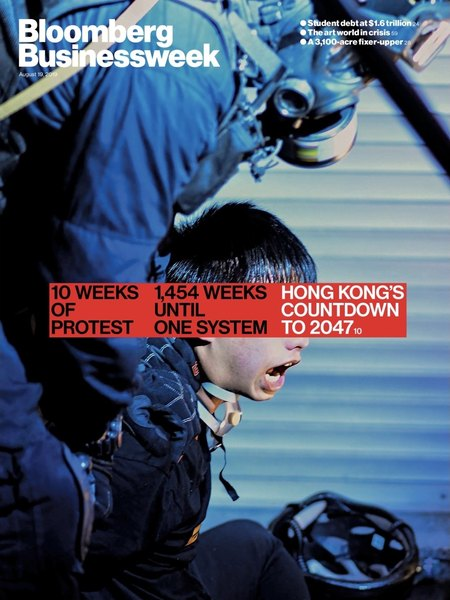
CRVI000669Unknown - Hong Kong's Countdown to 2047
Bloomberg Businessweek, August 19, 2019 · 2019
Bloomberg Businessweek, August 19, 2019 · 2019

CRVI000023NxxxxxS - Fujita Scale
Artwork by Ivan Peev · Headcount Records · 2014
Artwork by Ivan Peev · Headcount Records · 2014

CRVI000337Various Artists - Recorded Live Motortown Revue In Paris
Designer unknown · Universal · 2016
Designer unknown · Universal · 2016
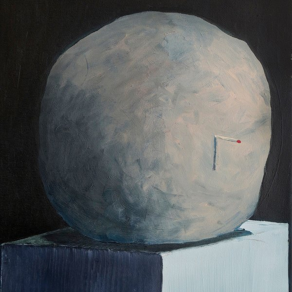
CRVI000024The Caretaker - An Empty Bliss Beyond This World
Artwork by Ivan Seal · History Always Favours The Winners · 2011
Artwork by Ivan Seal · History Always Favours The Winners · 2011
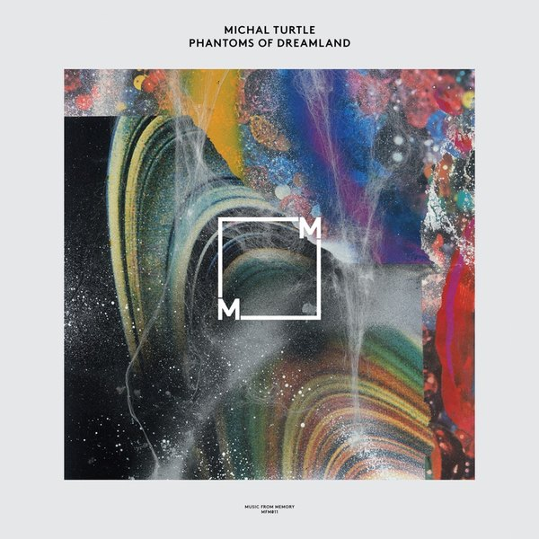
CRVI000090Michal Turtle - Phantoms Of Dreamland
Designer unknown · 2016
Designer unknown · 2016

CRVI000810Mark Tansey - Invisible Hand
Oil on canvas · 213 × 182.6 cm · 2011
Oil on canvas · 213 × 182.6 cm · 2011
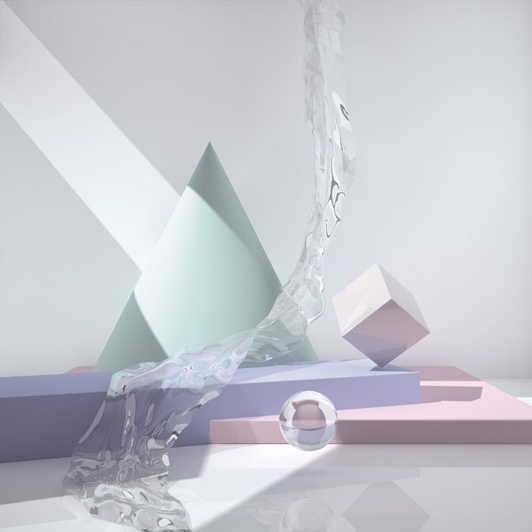
CRVI000104Gábor Lázár - Crisis Of Representation
Artwork by Zsófia Boda · Shelter Press · 2017
Artwork by Zsófia Boda · Shelter Press · 2017

CRVI000005Rashad Becker - Traditional Music of Notional Species Vol. II
Artwork by Bill Kouligas · 2017
Artwork by Bill Kouligas · 2017
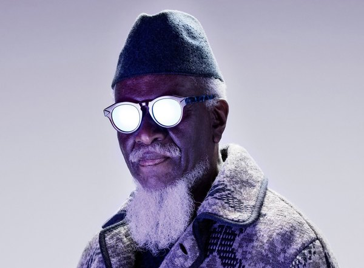
CRVI001259Christian Weber - Pharoah Sanders
Photograph by Christian Weber · GQ 'Jazz Giants' · 2016
Photograph by Christian Weber · GQ 'Jazz Giants' · 2016

CRVI000710Tame Impala - Currents
Designed by Robert Beatty · Modular Recordings · 2015
Designed by Robert Beatty · Modular Recordings · 2015

CRVI000466Unknown - XXX
Bloomberg Businessweek, June 25 – July 1, 2012 · 2012
Bloomberg Businessweek, June 25 – July 1, 2012 · 2012

CRVI000722Oh Sees - A Weird Exits
Designed by Robert Beatty · 2016
Designed by Robert Beatty · 2016

CRVI000462Richard Turley - The Freewheelin' Ben Bernanke
Bloomberg Businessweek, 6 August 2012 · illustration by David Parkins · 2012
Bloomberg Businessweek, 6 August 2012 · illustration by David Parkins · 2012

CRVI000622Tom Hislop, Stephen Meierding - The Sex Issue
Time Out New York, January 31-February 6 2018 · 2018
Time Out New York, January 31-February 6 2018 · 2018

CRVI000326NHK'Koyxen - Dance Classics Vol.I
Designer unknown · Pan · 2012
Designer unknown · Pan · 2012
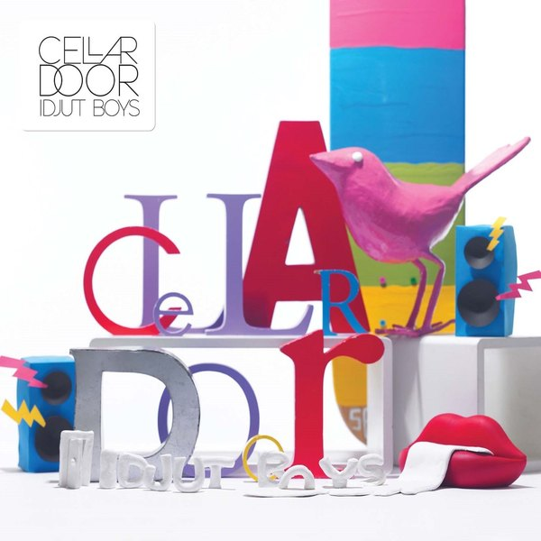
CRVI000403Idjut Boys - Cellar Door
Designer unknown · Smalltown Supersound · 2012
Designer unknown · Smalltown Supersound · 2012

CRVI000406Tin Man - Neo Neo Acid
Designer unknown · Absurd Recordings · 2012
Designer unknown · Absurd Recordings · 2012

CRVI000086Macintosh Plus - フローラルの専門店
Designer unknown · Beer On The Rug · 2011
Designer unknown · Beer On The Rug · 2011

CRVI000215Youngblood Brass Band - Pax Volumi
Illustration by Timothy J. Reynolds · Tru Thoughts · 2013
Illustration by Timothy J. Reynolds · Tru Thoughts · 2013

CRVI000655Unknown - The Photo Issue
VICE, July 2014 Brainiest · 2014
VICE, July 2014 Brainiest · 2014

CRVI000260Wiktor Górka - Cabaret
Poster · 2017 · 2017
Poster · 2017 · 2017

CRVI000463Richard Turley - The Underground Solution
Bloomberg Businessweek, 7 November 2011 · 2011
Bloomberg Businessweek, 7 November 2011 · 2011
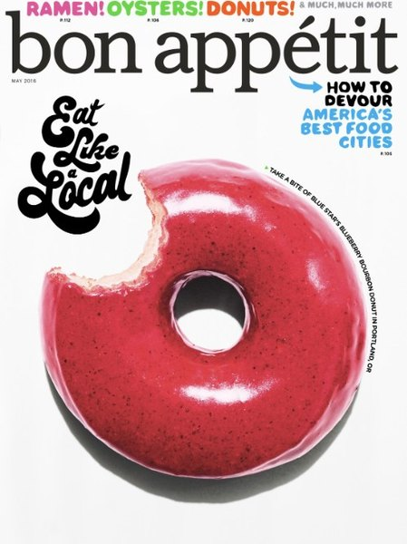
CRVI000640Alexander Grossman, Alex Lau, Elizabeth Cecil, Wilfred Hisashi - Eat Like a Local
Bon Appétit, May 2016 · 2016
Bon Appétit, May 2016 · 2016

CRVI000098Various - Midnite Spares
Designer unknown · Efficient Space · 2016
Designer unknown · Efficient Space · 2016

CRVI000465Unknown - Easy Target
Bloomberg Businessweek, 17 March 2014 · 2014
Bloomberg Businessweek, 17 March 2014 · 2014
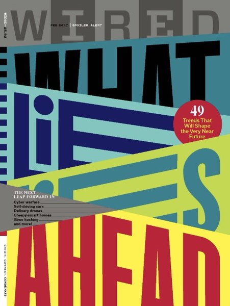
CRVI000631Unknown - What Lies Ahead
WIRED, February 2017 Most Controversial · 2017
WIRED, February 2017 Most Controversial · 2017
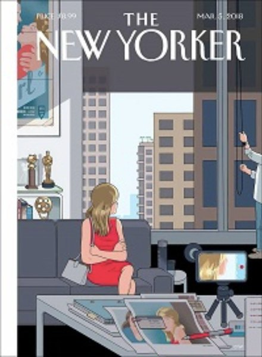
CRVI000616Chris Ware - Golden Opportunity
The New Yorker, March 5 2018 · 2018
The New Yorker, March 5 2018 · 2018

CRVI000001Paul Jebanasam - Rites
Designed by Alex Digard · 2013
Designed by Alex Digard · 2013

CRVI000668Sam Kaplan, Brian Byrne - How to Stop a Civil War
The Atlantic, December 2019 · 2019
The Atlantic, December 2019 · 2019
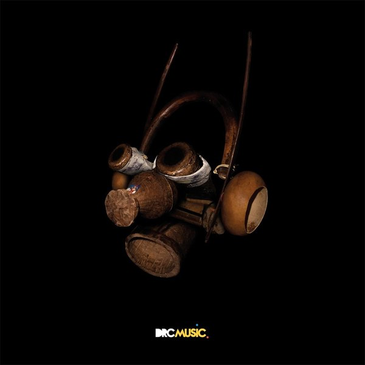
CRVI000274DRC Music - Kinshasa One Two
Designer unknown · Warp · 2011
Designer unknown · Warp · 2011
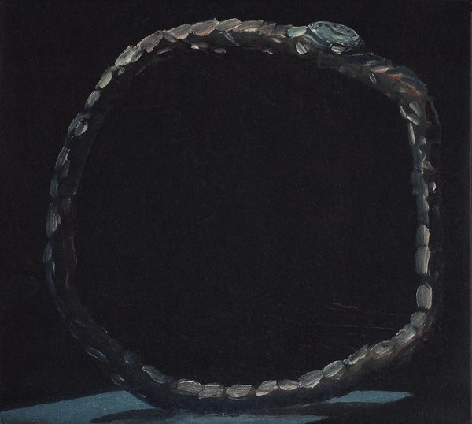
CRVI000084Leyland Kirby - Eager To Tear Apart The Stars
Designer unknown · History Always Favours The Winners · 2011
Designer unknown · History Always Favours The Winners · 2011
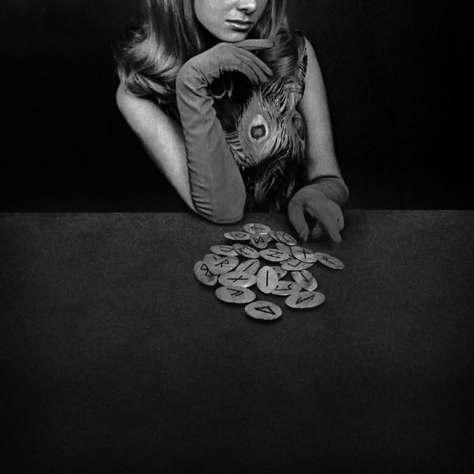
CRVI000046Demdike Stare - Voices Of Dust
Designed by Radu Prepeleac · 2010
Designed by Radu Prepeleac · 2010
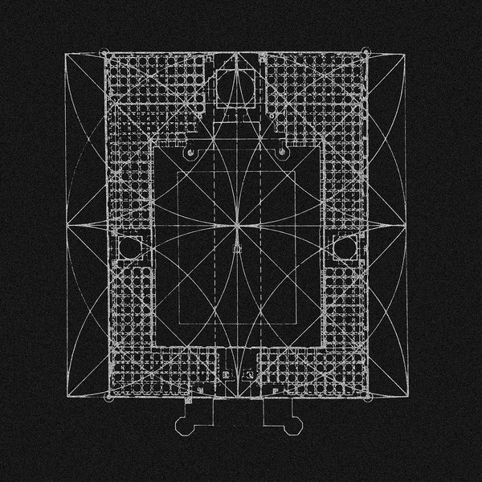
CRVI000002Sote - Architectonic
Artwork by Arash Bolouri · Morphine Records · 2014
Artwork by Arash Bolouri · Morphine Records · 2014
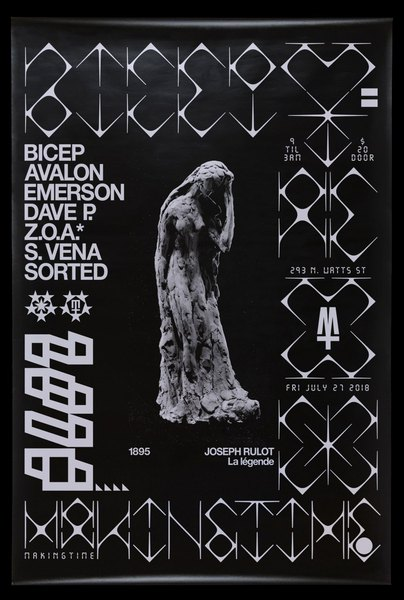
CRVI001068David Rudnick - Poster for Making Time — Bicep, Avalon, Emerson, Dave P, Z.O.A., S. Vena, Sorted
Poster · Philadelphia · 2018
Poster · Philadelphia · 2018
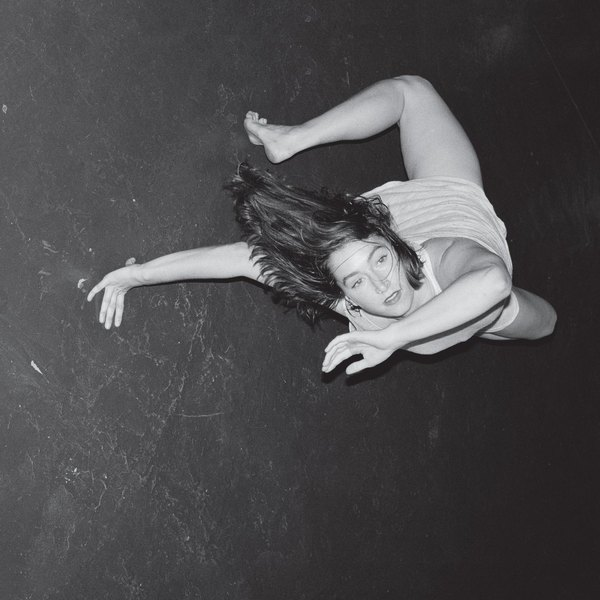
CRVI000043Raime - Quarter Turns Over A Living Line
Designed by Oliver Smith · 2012
Designed by Oliver Smith · 2012
CRVI000627Unknown - It's Not Easy Being Mark Zuckerberg Right Now
Bloomberg Businessweek, September 25, 2017 · 2017
Bloomberg Businessweek, September 25, 2017 · 2017
CRVI000080Karen Gwyer - Needs Continuum
Designer unknown · No Pain In Pop · 2013
Designer unknown · No Pain In Pop · 2013
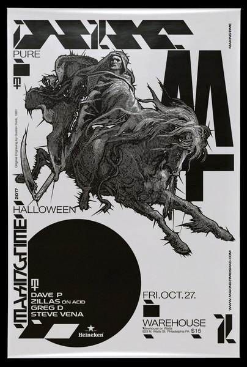
CRVI001071David Rudnick - Poster for Pure Halloween — Dave P, Zillas on Acid, Greg D, Steve Vena
Poster · 2017
Poster · 2017
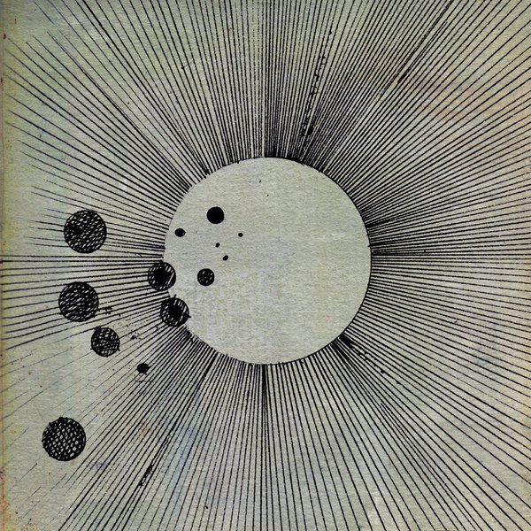
CRVI000323Flying Lotus - Cosmogramma
Designer unknown · Warp · 2010
Designer unknown · Warp · 2010
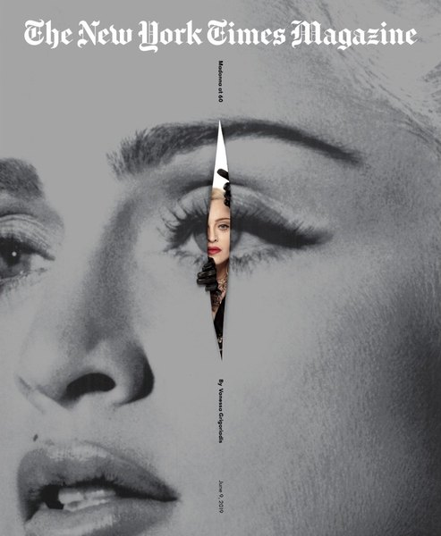
CRVI000671Gail Bichler, Kathy Ryan, JR - Madonna at 60
The New York Times Magazine, June 9, 2019 · 2019
The New York Times Magazine, June 9, 2019 · 2019
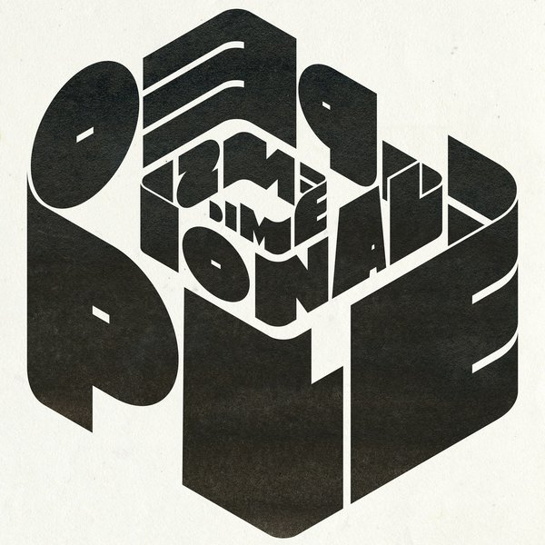
CRVI000064Mouse On Mars - Dimensional People
Designer unknown · Thrill Jockey · 2018
Designer unknown · Thrill Jockey · 2018

CRVI000280Mo Kolours - Mo Kolours
Designer unknown · One-Handed Music · 2014
Designer unknown · One-Handed Music · 2014
CRVI000028Pete Swanson - Man With Potential
Designed by John Twells, Radu Prepeleac · Type · 2011
Designed by John Twells, Radu Prepeleac · Type · 2011
CRVI000072Euglossine - Sharp Time
Designer unknown · 2017
Designer unknown · 2017
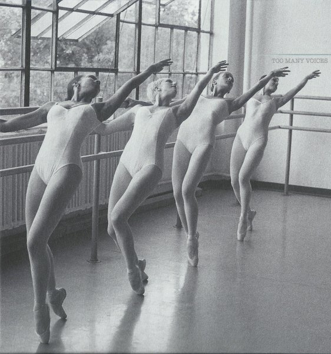
CRVI000033Andy Stott - Too Many Voices
Artwork by Julie Lemberger · 2016
Artwork by Julie Lemberger · 2016
CRVI000020Andy Stott - Faith In Strangers
Artwork by Herbert Matter · 2014
Artwork by Herbert Matter · 2014
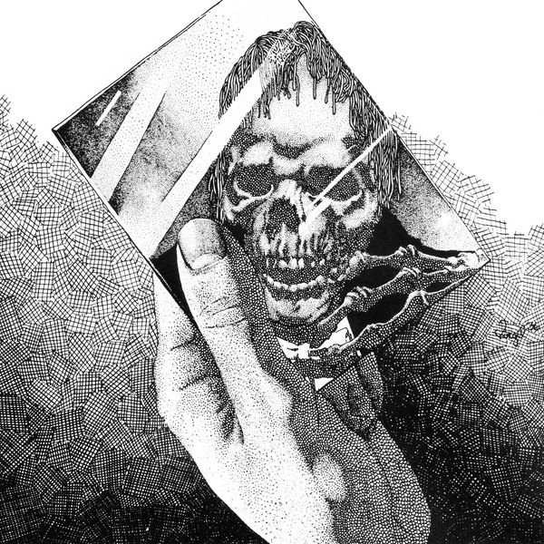
CRVI000391Oneohtrix Point Never - Replica
Designer unknown · Software · 2011
Designer unknown · Software · 2011

CRVI000063Actress - R.I.P
Designer unknown · Honest Jon's Records · 2012
Designer unknown · Honest Jon's Records · 2012
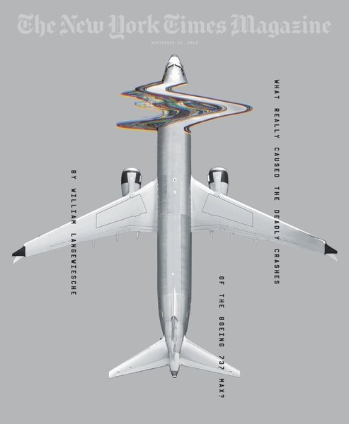
CRVI000670Gail Bichler, Matt Dorfman - Boeing
The New York Times Magazine, September 22, 2019 · 2019
The New York Times Magazine, September 22, 2019 · 2019

CRVI000102Actress - Splazsh
Designed by Will Bankhead · Honest Jon's Records · 2010
Designed by Will Bankhead · Honest Jon's Records · 2010
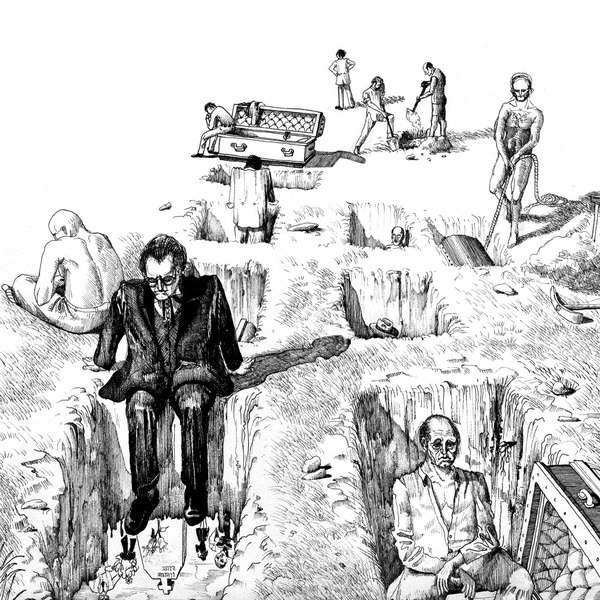
CRVI000004Laurel Halo - Chance Of Rain
Designed by Bill Kouligas · Hyperdub · 2013
Designed by Bill Kouligas · Hyperdub · 2013
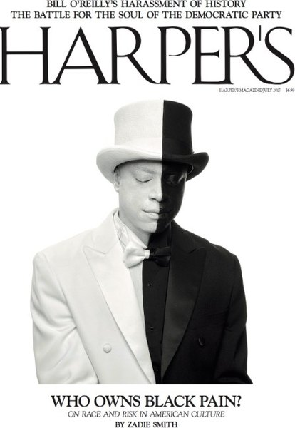
CRVI000629Chin Wang, Hank Willis Thomas in collaboration with Sanford Biggers - Who Owns Black Pain?
Harper's Magazine, July 2017 · 2017
Harper's Magazine, July 2017 · 2017

CRVI000026Blessed Initiative - Blessed Initiative
Designed by John Coulthart · Subtext · 2016
Designed by John Coulthart · Subtext · 2016

CRVI000085Lussuria - American Babylon
Designer unknown · Hospital Productions · 2012
Designer unknown · Hospital Productions · 2012

CRVI000050Shackleton & Vengeance Tenfold - Sferic Ghost Transmits
Designed by Sandhya Ellis · Honest Jon's Records · 2017
Designed by Sandhya Ellis · Honest Jon's Records · 2017

CRVI000006Objekt - Flatland
Artwork by Bill Kouligas, Kathryn Politis, Traianos Pakioufakis · Pan · 2014
Artwork by Bill Kouligas, Kathryn Politis, Traianos Pakioufakis · Pan · 2014
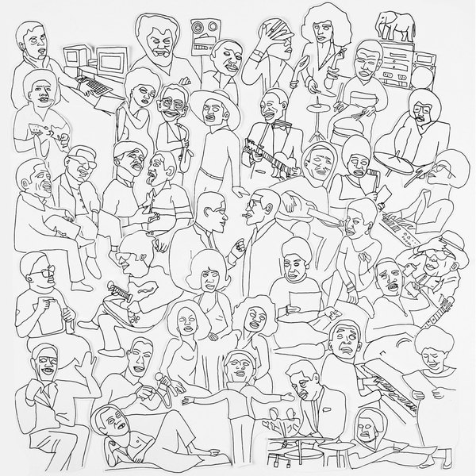
CRVI000281Romare - Projections
Designer unknown · Ninja Tune · 2015
Designer unknown · Ninja Tune · 2015

CRVI000036Various - Close to the Noise Floor (Formative UK Electronica 1975-1984)
Designed by Lora Findlay · 2016
Designed by Lora Findlay · 2016

CRVI000269The Brandt Brauer Frick Ensemble - Mr. Nachine
Designer unknown · Studio IK7 · 2011
Designer unknown · Studio IK7 · 2011

CRVI000855Richard Turley - Design
Bloomberg Businessweek · 2012
Bloomberg Businessweek · 2012

CRVI000645Robert Vargas - If You Can't Read That, You'd Better Read This
Bloomberg Businessweek, June 15–28 2015 · 2015
Bloomberg Businessweek, June 15–28 2015 · 2015